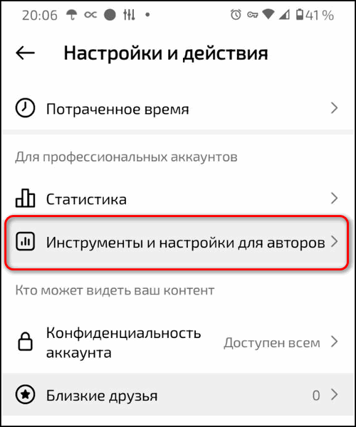
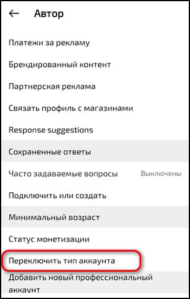
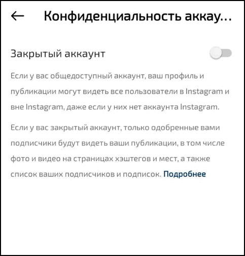
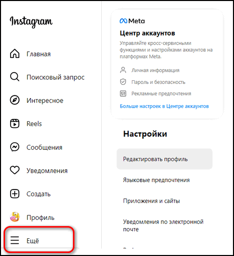
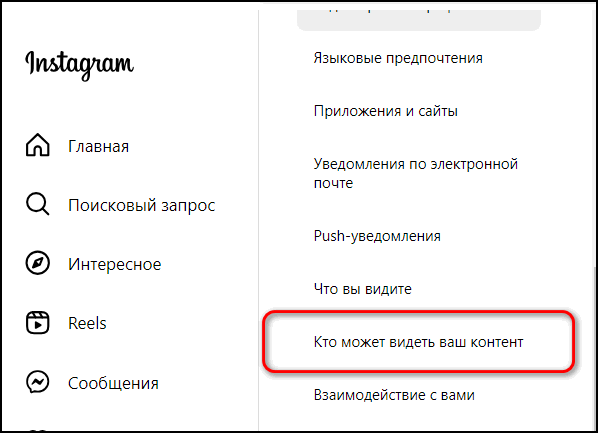
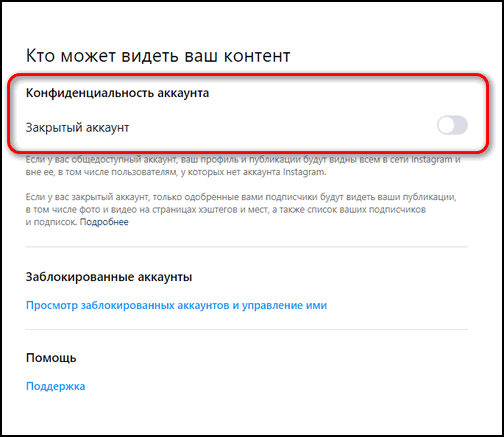
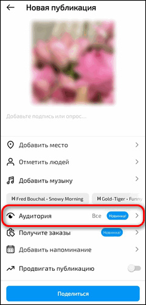
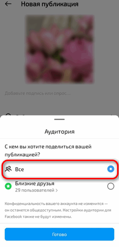

Как сделать закрытый аккаунт в Инстаграм и скрыть свои посты от чужих

В Инстаграм* закрыть профиль возможно через параметры, выбрав функцию: «Скрыть». Посетителям перестанут быть доступными фото, видео, последние добавленные Истории и Reels.
Сделать страничку закрытой в Инстаграме*
Убрать публикации из общего доступа не так сложно: пользователь переходит в настройки и выбирает: «Закрытый профиль». Все неподписанные не увидят публикации, не смогут взаимодействовать с контентом, посмотреть ваш закрытый аккаунт анонимно уже не получится.
Закрыть профиль в Инстаграм* можно другими способами:
- настроить приватность для записей;
- заблокировать тех, кто не должен видеть новые посты;
- отправлять фото и видео только в личные сообщения.
У скрытых аккаунтов есть преимущество в виде подтверждения подписки и наблюдение за каждым новым фанатом. Владельцам общедоступных страниц нужно смотреть в разделе «Уведомление» и отменять подписку уже после того, как человек её оформил.
Если был профессиональный
Закрыв аккаунт в Инстаграм* пользователь больше не увидит статистику, не сможет работать с рекламой и продвигать профиль. Чтобы переключиться с профессионального на закрытый:
- Зайти в Инстаграм* - нажать по «Профессиональный аккаунт».

- Появится панель инструментов – нажать сверху по значку в виде «шестеренки».
- Автор или Бизнес – Переключить тип аккаунта.

- Выбрать «Личный» - подтвердить переход.
- Перейти к стандартным настройкам – Конфиденциальность.

- Закрытый – подтвердить.
Инстаграм* пришлет предупреждение о том, что статистика не будет доступна, как только пользователь захочет перейти на статус «Личный».
Закрыть с компьютера
С компьютерной версии настройки расположены проще и удобнее для пользователя. Чтобы перейти на личный, а далее переключиться на закрытый:
- Открыть социальную сеть – нажать по кнопке: «Еще».

- Выбрать: «Настройки» - пролистать перечень функций.
- Перейти на личный аккаунт – подтвердить.
После, нужно закрыть страницу и в новых параметрах выбрать:
- Кто может видеть ваш контент – Закрытый аккаунт.

- Подтвердить изменения.

В компьютерную версию добавили больше настроек для управления личным и профессиональным аккаунтами. Также появилось размещение публикаций, Reels и Историй. Поэтому компьютерный формат мало отличается от мобильного, кроме того, что нет масок для Сторис.
Кто увидит публикации
Если закрыть аккаунт в Инстаграм*, то смотреть публикации смогут лишь подписчики. Ими становятся те, кто отправлял запрос владельцу страницу и получил положительный ответ. В подписчиках остаются все ранее подтвержденные, но этот список можно отредактировать. Предположим, что нужно удалить нескольких пользователей, которые просматривают публикации и регулярно комментируют:
- Зайти в социальную сеть – нажать по разделу: «Подписчики».
- Напротив никнейма выбрать: «Удалить».
- Подтвердить действие и обновить страницу.
То же можно сделать и с другими, но обновлять постоянно необязательно. Это способ, как посмотреть на новый список друзей и убедиться, что ненужные подписчики и боты были удалены.
Параметры работают на айфонах и на андроидах, с одинаковым способом очистки списка.
Добавить новых подписчиков
После внесенных изменений пользователь сможет добавлять новых подписчиков через раздел «Уведомления». Там появится небольшая вкладка «Запросы», где можно посмотреть тех. Кто отправил запрос на подписку и выбрать вариант: принять или отклонить. При включенных PUSH-оповещениях при отправке запросе будут приходить короткие сообщения, с указанием никнейма того, кто решил добавиться. Если появилось уведомление:
- Нажать на появившемся сообщении о желании добавиться.
- Перейти в социальную сеть – в разделе «Уведомления» посмотреть «Заявки».
- Нажать напротив отправленной заявки «Принять».
Можно оформить взаимную подписку на другого пользователя. Тогда такого человека можно добавить в список «Близких друзей» и создавать эксклюзивные публикации только для этого круга подписчиков.
Что будет со статистикой
Работать в личном блоге на закрытой странице сложно, потому что статистика не отображается. Поэтому владельцу страницы недоступны географические данные, сведения о половой принадлежности потенциальной аудитории. Переходя из бизнес-аккаунта в личный или закрытый – статистика удаляется без возможности восстановления. Если владелец страницы захочет восстановить данные и снова подключить профиль «автора»/ «бизнес» - ему придется начинать все сначала. То есть, аналитика будет сброшена до нулевых значений и первые данные появятся после нового поста, подписчика или иной активности в профиле.
Подробнее о том, как работает статистика в бизнес-профилях в Инстаграме*
Поэтому, прежде чем менять статус аккаунта, нужно скачать статистику или получить любым удобным способом. С закрытыми профилями даже не работают сторонние сервисы, если владелец захочет управлять как блогом.
Альтернативный способ как скрыть
Кроме полного скрытия учетной записи можно использовать вариант с ограничением аудитории при размещении поста. В последних обновлениях Инстаграма* появилась функция: «Выбрать аудиторию», с помощью которой можно указать кто именно сможет смотреть, комментировать и сохранять пост. Указать аудиторию:
- Зайти в Инстаграм* - перейти к добавлению новой публикации.

- Выбрать фото или видео – открыть описание.
- Появится в дополнительных параметрах «Аудитория» - выбрать «Близких друзей» или «Только мне».

В список «Близких друзей» можно добавить тех, кто должен увидеть запись. Остальные (гости и подписчики), публикацию не посмотрят из-за того, что та не появится в их Ленте. Статистика в этом случае, будет рассчитана на выбранную публику. Показатели не влияют на продвижение страницы и её показ в разделе «Интересное».
Закрытый аккаунт в Инстаграм* для личного
Основная задача большинства закрытых страниц – скрыть контент личного характера. Например, владелец не хочет, чтобы его фото и видео видели посетители страницы. Другие варианты использования:
- заранее зарегистрированные профили для детей;
- страницы домашних питомцев;
- семейный фотоальбом;
- общая учетная запись для мужа/жены или парня/девушки.
Инстаграм* реже блокирует такие профили, даже если разместить что-то запрещенное. Все оттого, что контент не увидят посетители страницы и он не разойдется среди большого числа поклонников.
Бизнес-идея с закрытым профилем
Закрытый профиль в Инстаграме* - это показатель эксклюзивности контента для определенной группы пользователей. В этом случае – подписчиков аккаунта, которые были ранее проверены владельцем. Закрытую страницу в Инстаграме* можно использовать такими способами:
- размещать товары раньше срока для платных подписчиков;
- добавлять товары по индивидуальным заявкам;
- запускать специальные скидки и акции.
Закрытый интернет-магазин привлекает потенциальных покупателей тем, что они не знают товарную линейку и не осведомлены в ценах. У гостей профиля появляется закономерный вопрос: «Что же там такого, что владелец скрыл аккаунт и не пытается продвигаться через вкладку «Рекомендации». Но такой способ привлечения аудитории сработает всего в трех случаях:
- премиальный товар и работа с аудиторией повышенного дохода;
- ручная работа и создание товара по индивидуальным заявкам;
- создание собственного «клуба подписчиков».
Предположим, чтобы вознаградить преданных фанатов и покупателей, владелец профиля решает создать закрытый профиль в Инстаграме*. Кроме того, что продавец получает обратную связь от постоянных клиентов, он стимулирует к активности и дополнительным покупкам новых покупателей.